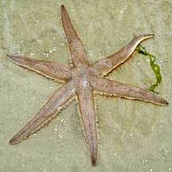
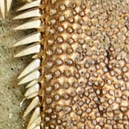
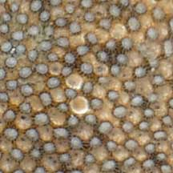
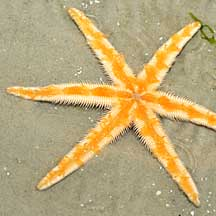
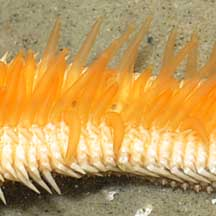
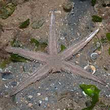
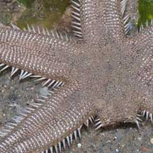

|
|
| sea stars text index | photo index |
| Phylum Echinodermata > Class Stelleroida > Subclass Asteroidea > Genus Luidia |
| Six-armed Luidia
sea star Luidia penangensis Family Luidiidae updated Mar 2020 Where seen? This elegant sea star is seldom seen. So far, only our Northern shores at Chek Jawa and Changi. According to Lane, it was recorded from the Changi-Ubin-Tekong area. Features: Diameter with arms to 8-10cm. Six arms. The arms are long, with slight constriction at the base, slightly rounded, and tapered to a pointed tip, edged with tiny spines along the sides. The upper surface of the body is covered with special flat-topped, pillar-like structures called paxillae. The underside is pale, and from grooves along the arms emerge large tube feet with pointed tips, sometimes sometimes yellowish or bright orange. The upperside is beige, greyish or pink; plain or with a darker stripe along the arms. |
 Chek Jawa, Jan 09 |
 |
 |
|
 Underside. |
 Pointed tube feet. |
| Six-armed Luidia sea stars on Singapore shores |
On wildsingapore
flickr
|
| Other sightings on Singapore shores |
 Changi Creek, Jan 21 |
 Photo shared by Marcus Ng on facebook. |
Links
|